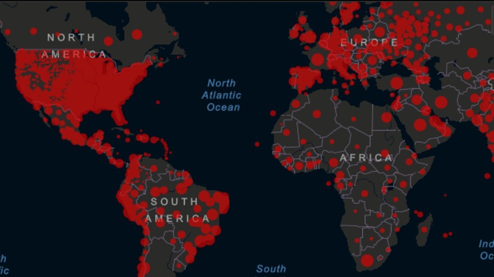

ESTADOS UNIDOS
Estados Unidos se ha convertido en el centro del tragedia de la covid-19 en el mundo: desde el pasado fin de semana, es el país con mayor número de muertes atribuidas a la enfermedad. El país había informado de más de 22.100 fallecimientos y de 558.000 casos diagnosticados hasta este lunes, según datos de la Universidad Johns Hopkins. Más que países como Italia o España, los más afectados después de China, donde apareció el virus. Estados Unidos supera a Italia y se convierte en el país del mundo con más muertos y casos de coronavirus Cómo EE.UU. se convirtió en el nuevo epicentro mundial de la pandemia de coronavirus En los cuatro últimos días se registraron unas 2.000 muertes diarias, la mayoría en la ciudad de Nueva York y alrededores, si bien los expertos consideran que la cifra real puede ser superior ya que se han excluido de las estadísticas oficiales las muertes en hogares, según la agencia Reuters. "Nos estamos acercando al pico ahora mismo", señaló el director de los Centros para el Control y Prevención de Enfermedades (CDC, por sus siglas en inglés) este lunes en el programa Today de la cadena estadounidense NBC.Aquí recopilamos cuatro claves que, según los especialistas en salud pública, epidemiólogos y analistas, llevaron a Estados Unidos a estar detrás de esta compleja situación.
INDIA
Cuando hablé con él por teléfono, acababa de regresar a su aldea en el estado de Rayastán desde la vecina Guyarat, en el norte de India, donde trabaja como albañil. En medio de un intenso calor, Goutam Lal Meena había caminado sobre asfalto caliente con sus sandalias. Dijo que había sobrevivido solo a base de agua y galletas. En Guyarat, Meena ganaba hasta 400 rupias (US$5,34) por día y enviaba la mayor parte de sus ingresos a su familia en su pueblo natal. Coronavirus: los gráficos y mapas que muestran el impresionante impacto económico de la pandemia "Esto se va a parecer mucho a una economía de guerra": la advertencia sobre cómo la crisis del coronavirus aumentará el desempleo y la pobreza en América Latina El trabajo, y como consecuencia el salario, se terminódespués de que India declarara un cierre de 21 días desde la medianoche del 24 de marzo para evitar la propagación del coronavirus.India reportó más de 1.200 casos de covid-19 y 32 muertes hasta el lunes 30 de marzo, según el recuento de la Universidad John Hopkins, de Estados Unidos.La paralización de todo tipo de transporte significa que Meena se vio obligado a volver a pie. "Caminé durante el día y la noche. ¿Qué opción tenía? Tengo poco dinero y casi nada de comida", le contó a la BBC, con voz ronca y tensa. "Cuando reanudemos la vida normal, los casos de coronavirus volverán a subir": Luciana Borio, la latina que asesoró a la Casa Blanca en biodefensa y advirtió sobre una pandemia.